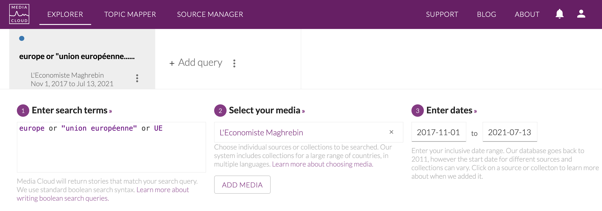

Chapter 2 Corpus mediacloud
library(quanteda)Package version: 3.0.0
Unicode version: 13.0
ICU version: 69.1Parallel computing: 8 of 8 threads used.See https://quanteda.io for tutorials and examples.library(dplyr)
library(ggplot2)
library(tidytext)
library(knitr)
datapath<- "data"2.1 The Media Cloud database
(tbd : presentation of the MediaCloud project)
Mediacloud can be freely used by researchers. All you have to do is to create an account at the following adress :
2.2 How to extract data from mediacloud ?
You have different ways to get title of news. We will focus here on a simple example of data obtained through the mediacloud interface. We suppose that you want to extract news from the Tunisian newspapers speaking from Europe.
2.2.1 Selection of media with source manager
We use the application called Source Manager and we introduce a research by collection which is the most convenient to explore what is available in a country. In our example, the target country is Tunisia and we have three collections that are propsed :
knitr::include_graphics("pics/mc_source_001.png")
We have selected the collection named “Tunisia National” because we are interested in the most important newspapers of the country.
knitr::include_graphics("pics/mc_source_002.png") The buble graphic on the right indicates immediately the media that has produced the highest number of news, but it is wise to explore in more details the list on the left which indicates for each media the statting date of data collection.
The buble graphic on the right indicates immediately the media that has produced the highest number of news, but it is wise to explore in more details the list on the left which indicates for each media the statting date of data collection.
When a media appears interesting, we click on its name to obtain a brief summary of the metadata. For example, in the case of L’économiste Maghrebin the metadata indicates :
knitr::include_graphics("pics/mc_source_003.png")
The media looks promising, but before to go further, it can be better to have a look at the website of the media to have a more concrete idea of the content if we don’t know in advance what it is about in terms of content, what is the ideological orientation, etc.
knitr::include_graphics("pics/ecomag.png")
Here we can see that this is an ecnomic journal, published in french, with news organized in concentric geographic circles (Nation > Maghreb > Africa > World) which is precisely what we are looking for in the IMAGEUN project. We will further complete the informations about this, but before to do that we have to check in more details if the production of the media is regular through time with another tool offered by mediacloud, the explorer.
2.2.2 Checking the stability through time
We have clicked on search in explorer on the metadata page of the Source Manager and obtain a news interfacce where we modify the date to cover the full period of collection of the media (or our period of interest). In the research field, we let the search term * which indicates a research on all news.
knitr::include_graphics("pics/mc_explo_001.png")
Below your request, you obtain a graphic entitled Attention Over Time with the distribution of the number of news published per day which help you to verify if the distribution of news is regular through time. You just have to modify the type of graphic in order to visualize Story Count and you can choose the time span you want (day, week or month) for the evaluation of the regularity of news flow. In our example, we notice that at daily level they are some brief period of break in 2019, but the flow is reasonnabely regular with approximatively 5 news per day at the beginning and 10 to 20 in the final period. We also notice a classical week cycle with a decrease of news published during the week-end.
knitr::include_graphics("pics/mc_explo_002.png")
Going down, you will find a news panel entitled Total Attention which gives you the total number of stories found. In our example, we have a total of 13626 stories produced by our media over the period.
knitr::include_graphics("pics/mc003.png")
2.2.3 Selection of news specifically related to a topic (option)
You can eventually use Mediacloud to check the number of news produced about a specific topic, for example Europe or European Union or EU. The request shouldbe put in lower case with "" for compounds. Detailed explanation are available in the .
knitr::include_graphics("pics/mc_explo_003.png") This time you can use the graphic option Stories percentage rather than Story count if you want to viusalize the salience of the topic through time.
knitr::include_graphics("pics/mc_explo_004.png")
In our example, we have 369 news that appears to be related to our request about Europe or EU with a relatively regular pattern at month level of 1 to 3 % of news and exceptionaly 5 to 7 %.
2.2.4 Download and storage of news
According to your selection (all news or a specific topic) you will download more or less title. Here, me make the choice to get all news, which means that we have to repeat the original request with *.
Finally, by clicking on the button Download all story URLS, you can get a .csv file that you can easily load in your favorite programming language.
2.3 How to import and export mediacloud data to R
In the case of R, you can easily use the simple program below to import a csv file extracted from mediacloud at the data and transform the result firstly in a classical data.frameobject.
df<-read.csv(file =("data/corpora/TUN/-all-story-urls-20210713153555.csv"),
sep=",",
header=T,
encoding = "UTF-8",
stringsAsFactors = F)
head(df)# A tibble: 6 x 10
stories_id publish_date title url language ap_syndicated themes media_id
<int> <chr> <chr> <chr> <chr> <chr> <chr> <int>
1 719049395 2017-11-03 0… Univer… http:… fr False "" 623820
2 719049401 2017-11-03 0… Cyrine… http:… fr False "" 623820
3 719049385 2017-11-03 0… Santé … http:… fr False "" 623820
4 719049416 2017-11-03 0… Düssel… http:… fr False "" 623820
5 719457836 2017-11-04 0… Etude:… http:… fr False "" 623820
6 719457840 2017-11-04 0… Réconc… http:… fr False "" 623820
# … with 2 more variables: media_name <chr>, media_url <chr>str(df)'data.frame': 13623 obs. of 10 variables:
$ stories_id : int 719049395 719049401 719049385 719049416 719457836 719457840 719457843 719457851 719489735 720908005 ...
$ publish_date : chr "2017-11-03 06:59:58" "2017-11-03 06:15:37" "2017-11-03 07:32:40" "2017-11-03 04:36:14" ...
$ title : chr "Université: projet de formation codiplomante entre la Sorbonne et Tunis El Manar" "Cyrine Ben Hassine élue présidente de l’ATUGE France (2017-2018)" "Santé : pour une nouvelle relation médecin-patient" "Düsseldorf : 250 visiteurs professionnels et 8 exposants tunisiens au salon Medica 2017" ...
$ url : chr "http://www.leconomistemaghrebin.com/2017/11/03/universite-projet-de-formation-co-diplomante-entre-sorbonne-tunis-el-manar/" "http://www.leconomistemaghrebin.com/2017/11/03/cirine-ben-hassine-elue-presidente-latuge-france-2017-2018/" "http://www.leconomistemaghrebin.com/2017/11/03/sante-medecin-patient/" "http://www.leconomistemaghrebin.com/2017/11/03/dusseldorf-250-visiteurs-professionnels-7-exposants-tunisiens-sa"| __truncated__ ...
$ language : chr "fr" "fr" "fr" "fr" ...
$ ap_syndicated: chr "False" "False" "False" "False" ...
$ themes : chr "" "" "" "" ...
$ media_id : int 623820 623820 623820 623820 623820 623820 623820 623820 623820 623820 ...
$ media_name : chr "L'Economiste Maghrebin" "L'Economiste Maghrebin" "L'Economiste Maghrebin" "L'Economiste Maghrebin" ...
$ media_url : chr "http://www.leconomistemaghrebin.com/" "http://www.leconomistemaghrebin.com/" "http://www.leconomistemaghrebin.com/" "http://www.leconomistemaghrebin.com/" ...2.3.1 Transformation in quanteda format.
Currently, the size of the file (unzipped) is equal to 4 Mb. But we can observe that a lot of information are the same for all news and should not necessarily be kept. We can We propose therefore another form of storage based on quanteda format.
# Create Quanteda corpus
qd<-corpus(df$title)
## Add id
qd$id<-df$stories_id
## Add source code
qd$source<-"ecomag"
# Add date
qd$date<-df$publish_date
# add language
qd$lang<-"fr"
# add_url
qd$url<-df$url
# Add global meta
meta(qd,"meta_source")<-"Media Cloud "
meta(qd,"meta_time")<-"Download the 2021-07-13"
meta(qd,"meta_author")<-"Elaborated by Claude Grasland"
meta(qd,"project")<-"ANR-DFG Project IMAGEUN"
str(qd) 'corpus' Named chr [1:13623] "Université: projet de formation codiplomante entre la Sorbonne et Tunis El Manar" ...
- attr(*, "names")= chr [1:13623] "text1" "text2" "text3" "text4" ...
- attr(*, "docvars")='data.frame': 13623 obs. of 8 variables:
..$ docname_: chr [1:13623] "text1" "text2" "text3" "text4" ...
..$ docid_ : Factor w/ 13623 levels "text1","text2",..: 1 2 3 4 5 6 7 8 9 10 ...
..$ segid_ : int [1:13623] 1 1 1 1 1 1 1 1 1 1 ...
..$ id : int [1:13623] 719049395 719049401 719049385 719049416 719457836 719457840 719457843 719457851 719489735 720908005 ...
..$ source : chr [1:13623] "ecomag" "ecomag" "ecomag" "ecomag" ...
..$ date : chr [1:13623] "2017-11-03 06:59:58" "2017-11-03 06:15:37" "2017-11-03 07:32:40" "2017-11-03 04:36:14" ...
..$ lang : chr [1:13623] "fr" "fr" "fr" "fr" ...
..$ url : chr [1:13623] "http://www.leconomistemaghrebin.com/2017/11/03/universite-projet-de-formation-co-diplomante-entre-sorbonne-tunis-el-manar/" "http://www.leconomistemaghrebin.com/2017/11/03/cirine-ben-hassine-elue-presidente-latuge-france-2017-2018/" "http://www.leconomistemaghrebin.com/2017/11/03/sante-medecin-patient/" "http://www.leconomistemaghrebin.com/2017/11/03/dusseldorf-250-visiteurs-professionnels-7-exposants-tunisiens-sa"| __truncated__ ...
- attr(*, "meta")=List of 3
..$ system:List of 5
.. ..$ package-version:Classes 'package_version', 'numeric_version' hidden list of 1
.. .. ..$ : int [1:3] 3 0 0
.. ..$ r-version :Classes 'R_system_version', 'package_version', 'numeric_version' hidden list of 1
.. .. ..$ : int [1:3] 4 0 2
.. ..$ system : Named chr [1:3] "Darwin" "x86_64" "claudegrasland1"
.. .. ..- attr(*, "names")= chr [1:3] "sysname" "machine" "user"
.. ..$ directory : chr "/Users/claudegrasland1/git/media_cookbook"
.. ..$ created : Date[1:1], format: "2021-07-13"
..$ object:List of 2
.. ..$ unit : chr "documents"
.. ..$ summary:List of 2
.. .. ..$ hash: chr(0)
.. .. ..$ data: NULL
..$ user :List of 4
.. ..$ meta_source: chr "Media Cloud "
.. ..$ meta_time : chr "Download the 2021-07-13"
.. ..$ meta_author: chr "Elaborated by Claude Grasland"
.. ..$ project : chr "ANR-DFG Project IMAGEUN"We have created a quanteda object with a lot of information stored in various fields. The structure of the object is the following one
str(qd) 'corpus' Named chr [1:13623] "Université: projet de formation codiplomante entre la Sorbonne et Tunis El Manar" ...
- attr(*, "names")= chr [1:13623] "text1" "text2" "text3" "text4" ...
- attr(*, "docvars")='data.frame': 13623 obs. of 8 variables:
..$ docname_: chr [1:13623] "text1" "text2" "text3" "text4" ...
..$ docid_ : Factor w/ 13623 levels "text1","text2",..: 1 2 3 4 5 6 7 8 9 10 ...
..$ segid_ : int [1:13623] 1 1 1 1 1 1 1 1 1 1 ...
..$ id : int [1:13623] 719049395 719049401 719049385 719049416 719457836 719457840 719457843 719457851 719489735 720908005 ...
..$ source : chr [1:13623] "ecomag" "ecomag" "ecomag" "ecomag" ...
..$ date : chr [1:13623] "2017-11-03 06:59:58" "2017-11-03 06:15:37" "2017-11-03 07:32:40" "2017-11-03 04:36:14" ...
..$ lang : chr [1:13623] "fr" "fr" "fr" "fr" ...
..$ url : chr [1:13623] "http://www.leconomistemaghrebin.com/2017/11/03/universite-projet-de-formation-co-diplomante-entre-sorbonne-tunis-el-manar/" "http://www.leconomistemaghrebin.com/2017/11/03/cirine-ben-hassine-elue-presidente-latuge-france-2017-2018/" "http://www.leconomistemaghrebin.com/2017/11/03/sante-medecin-patient/" "http://www.leconomistemaghrebin.com/2017/11/03/dusseldorf-250-visiteurs-professionnels-7-exposants-tunisiens-sa"| __truncated__ ...
- attr(*, "meta")=List of 3
..$ system:List of 5
.. ..$ package-version:Classes 'package_version', 'numeric_version' hidden list of 1
.. .. ..$ : int [1:3] 3 0 0
.. ..$ r-version :Classes 'R_system_version', 'package_version', 'numeric_version' hidden list of 1
.. .. ..$ : int [1:3] 4 0 2
.. ..$ system : Named chr [1:3] "Darwin" "x86_64" "claudegrasland1"
.. .. ..- attr(*, "names")= chr [1:3] "sysname" "machine" "user"
.. ..$ directory : chr "/Users/claudegrasland1/git/media_cookbook"
.. ..$ created : Date[1:1], format: "2021-07-13"
..$ object:List of 2
.. ..$ unit : chr "documents"
.. ..$ summary:List of 2
.. .. ..$ hash: chr(0)
.. .. ..$ data: NULL
..$ user :List of 4
.. ..$ meta_source: chr "Media Cloud "
.. ..$ meta_time : chr "Download the 2021-07-13"
.. ..$ meta_author: chr "Elaborated by Claude Grasland"
.. ..$ project : chr "ANR-DFG Project IMAGEUN"We can look at the first titles with head()
kable(head(qd,3))| x | |
|---|---|
| text1 | Université: projet de formation codiplomante entre la Sorbonne et Tunis El Manar |
| text2 | Cyrine Ben Hassine élue présidente de l’ATUGE France (2017-2018) |
| text3 | Santé : pour une nouvelle relation médecin-patient |
We can get meta information on each stories with summary()
summary(qd,3)# A tibble: 3 x 9
Text Types Tokens Sentences id source date lang url
<chr> <int> <int> <int> <int> <chr> <chr> <chr> <chr>
1 text1 13 13 1 7.19e8 ecomag 2017-11… fr http://www.leconom…
2 text2 11 11 1 7.19e8 ecomag 2017-11… fr http://www.leconom…
3 text3 7 7 1 7.19e8 ecomag 2017-11… fr http://www.leconom…We can get meta information about the full document
meta(qd)$meta_source
[1] "Media Cloud "
$meta_time
[1] "Download the 2021-07-13"
$meta_author
[1] "Elaborated by Claude Grasland"
$project
[1] "ANR-DFG Project IMAGEUN"2.3.2 Storage of the quanteda object
We can finally save the object in .Rdata format in a directory dedicated to our quanteda files. It can be usefull to give some information in the name of the file
saveRDS(qd,"data/corpora/TUN/qd_ecomag_titles.Rdata")We have kept all the information present in the initial file, but also added specific metadata of interest for us. The size of the storage is now equal to 0.43Mb which means a division by 8 as compared to the initial .csv file downloaded from Media Cloud.
2.3.3 Backtransformation of quanteda to data.table or tibble
In the following steps, we will make an intensive use of quanteda, but sometimes it can be usefull to export the results in a more practical format or to use other packages. For this reasons, it is important to know that the tidytextpackage can easily transform quanteda object in tibbles which are more classical and easy to manage
td <- tidy(qd)Warning: 'texts.corpus' is deprecated.
Use 'as.character' instead.
See help("Deprecated")head(td)# A tibble: 6 x 6
text id source date lang url
<chr> <int> <chr> <chr> <chr> <chr>
1 Université: projet de f… 7.19e8 ecomag 2017-11… fr http://www.leconomiste…
2 Cyrine Ben Hassine élue… 7.19e8 ecomag 2017-11… fr http://www.leconomiste…
3 Santé : pour une nouvel… 7.19e8 ecomag 2017-11… fr http://www.leconomiste…
4 Düsseldorf : 250 visite… 7.19e8 ecomag 2017-11… fr http://www.leconomiste…
5 Etude: 68% des dirigean… 7.19e8 ecomag 2017-11… fr http://www.leconomiste…
6 Réconciliation 7.19e8 ecomag 2017-11… fr http://www.leconomiste…str(td)tibble [13,623 × 6] (S3: tbl_df/tbl/data.frame)
$ text : chr [1:13623] "Université: projet de formation codiplomante entre la Sorbonne et Tunis El Manar" "Cyrine Ben Hassine élue présidente de l’ATUGE France (2017-2018)" "Santé : pour une nouvelle relation médecin-patient" "Düsseldorf : 250 visiteurs professionnels et 8 exposants tunisiens au salon Medica 2017" ...
$ id : int [1:13623] 719049395 719049401 719049385 719049416 719457836 719457840 719457843 719457851 719489735 720908005 ...
$ source: chr [1:13623] "ecomag" "ecomag" "ecomag" "ecomag" ...
$ date : chr [1:13623] "2017-11-03 06:59:58" "2017-11-03 06:15:37" "2017-11-03 07:32:40" "2017-11-03 04:36:14" ...
$ lang : chr [1:13623] "fr" "fr" "fr" "fr" ...
$ url : chr [1:13623] "http://www.leconomistemaghrebin.com/2017/11/03/universite-projet-de-formation-co-diplomante-entre-sorbonne-tunis-el-manar/" "http://www.leconomistemaghrebin.com/2017/11/03/cirine-ben-hassine-elue-presidente-latuge-france-2017-2018/" "http://www.leconomistemaghrebin.com/2017/11/03/sante-medecin-patient/" "http://www.leconomistemaghrebin.com/2017/11/03/dusseldorf-250-visiteurs-professionnels-7-exposants-tunisiens-sa"| __truncated__ ...